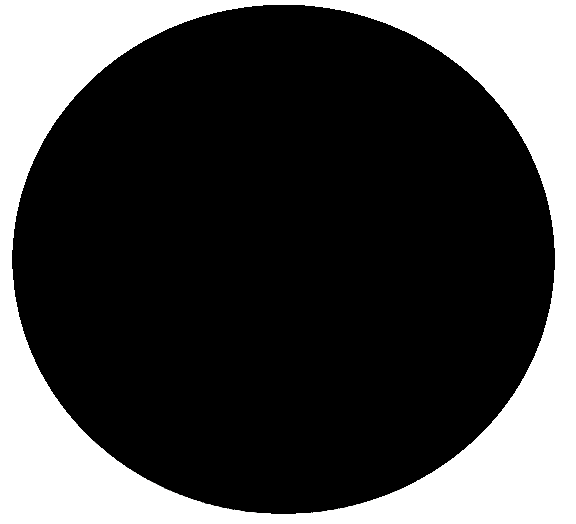

|

A Hashousphere is an erogenous zone that comprises differing areas and shapes of landmass with regions of land and water features. These �spheres of activity� float freely in space with their own atmospheres, life support systems, types of gravity, i.e. sobriety, humour, candidness and the force of its Hashing inhabitants. It therefore has defined boundaries, and looks like some very similar things found in sci-fi theme scenes painted on album sleeves in the 1970�s for bands such as Yes. Fortunately, all things are possible in the vastness of the Hash universe, and sometimes Hashouspheres regularly gently collide or move very close by, and the inhabitants get to willingly express an avid interest in the other�s interesting zones. Unfortunately, the size of a Hashousphere depends very much on a near religious fervour, that centres on a common anatomical phenomenon experienced by Hashers. This is where the mathematical ratio between their respective arm lengths and the depth of their trouser pockets, i.e. the greater the distance between the tips of the fingers and the bottom of the pockets where the cash is stored, equates to a severe difficulty to reach the available cash, thus reducing the hashers 'spending power', hence the smaller the Hashousphere will be.
We Moleskins can be found running near towns and villages all over East Kent, such as: Adisham, Ashford, Canterbury, Charing, Deal, Dover, Folkestone, Herne Bay, Hythe and Whitstable. In France and Belgium we hold annual 'Special Event' runs in villages near the towns of Calais, Boulogne, Le Touquet, St. Omer, Brugges and Ostend. |